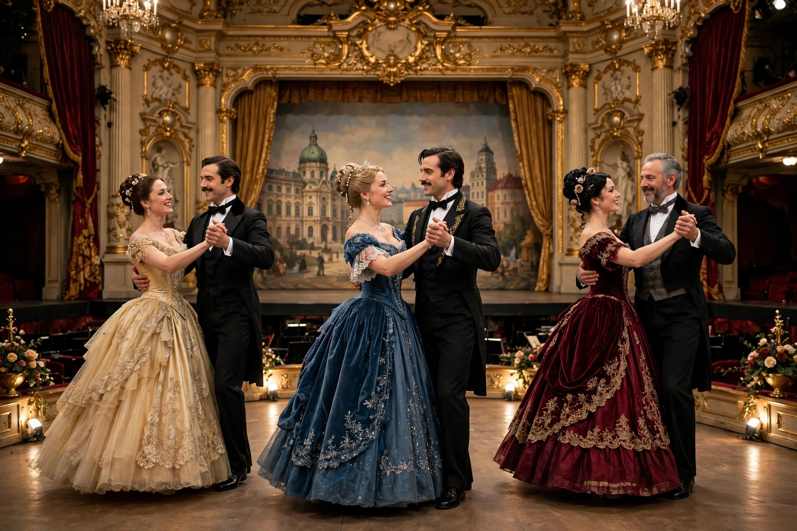

Operetta

An operetta is a form of theatre and a genre of light opera. It includes spoken dialogue, songs and dances. Operettas are often considered less "serious" than operas, although their musical complexity can be comparable; they are usually shorter, on romantic or satirical themes, and typically have a happy ending.
History
The genre emerged in mid-19th-century Paris with the works of Jacques Offenbach, such as Orpheus in the Underworld (1858) and La belle Hélène (1864), which combined catchy tunes with topical satire. Vienna became the second capital of operetta: Johann Strauss II's Die Fledermaus (1874) and Franz Lehár's The Merry Widow (1905) set the waltz-driven template for the "Silver Age" of Viennese operetta.
English-language operetta
In Britain, Gilbert and Sullivan's Savoy operas — H.M.S. Pinafore (1878), The Pirates of Penzance (1879), The Mikado (1885) — achieved enormous success and influenced American musical theatre. In the United States, composers such as Victor Herbert and Sigmund Romberg carried the operetta style into the early 20th century before it merged into the modern musical.
Characteristics
Operettas alternate sung numbers with spoken dialogue, feature dances drawn from contemporary ballrooms — the waltz, polka, galop and later the fox-trot — and favour romantic intrigue, mistaken identity and gentle social satire over tragedy.